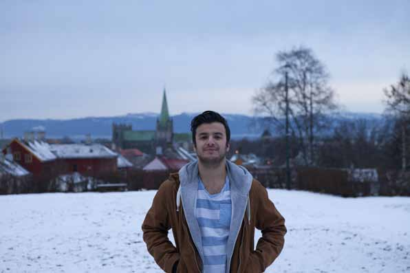

For mange studenter er Trondheim bare en studieby, og de velger å flytte etter endt utdanning. Mer markedsføring kan bli nøkkelen til at flere blir værende.
TEKST: Kyrre Sandve Ryeng
kyrryen@underdusken.no
FOTO: Juliana Martinsen

Masterstudent Ferhat Aydin i industriell
økologi ved NTNU planlegger
å flytte vekk fra Trondheim når han
er ferdig med studiene. Han mener at
både kommunen og næringslivet må
drive med bedre markedsføring for å
få studentene til å bli.
– De må vise hvorfor det er bra å
være her, sier han.
Dårlig arbeidsmarked
Aydin søkte seg til Trondheim på
grunn av studentmiljøet og den anerkjennelsen
NTNU har som universitet.
Han mener at det er et behov
for flere jobbmuligheter i Trondheim,
og forklarer at han må til Østlandet
for å finne de bedriftene som etterspør
kompetansen hans.
– Det er visse jobbmuligheter her,
men det er mer for ingeniører og
økonomer. Arbeidsmarkedet og nettverkene
er større i andre byer, sier
han.
Trøndelagsdagen ble nylig
arrangert av Næringsforeningen i
Trondheim for å opplyse om jobbmulighetene
i Midt-Norge og for å få
flere studenter til å velge Trondheim
etter studiene. Aydin forteller at han
først fikk vite om denne i ettertid.
– Selv om studiet mitt har nær
kontakt med næringslivet, er det få
ting som har knyttet meg spesielt opp
mot arbeidslivet i regionen, sier han.
Få karrieredager Masterstudent Bhanu Kaushal i energi og miljø ved NTNU mener det er for få karrieredager som markedsfører jobbtilbud i Trondheim. Hun påpeker i likhet med Aydin at bedriftene i området kunne vært mer aktive for å rekruttere studentene til regionen. – Det er viktig at bedriftene markedsfører seg selv og er mer til stede på campus. Det er mye man kan gjøre for å få de på vippen til å bli, sier hun.
Lite prestisje med OA Prorektor for forskning og utvikling Curt Rice ved Universitetet i Tromsø ser en økende støtte til OA i akademia, men legger ikke skjul på at forskere står overfor dilemma som kan vanskeliggjøre prosessen mot OA ytterligere. – I en akademisk karriere blir man stadig vurdert av sine kolleger. Forskerne må velge mellom å bli publisert i høyprestisjetidskrifter, noe som tradisjonelt ikke innebærer OA, eller om de skal publisere i OA. Dette vil kanskje ikke fremme karrieren i like stor grad, sier han. Det er likevel enkelte hendelser som har hjulpet forkjemperne for åpen forskning. – Det hjalp veldig at nobelprisvinneren i medisin, Sir John Gurdon, publiserte sin forskning i OA. Det viser at tilgjengelig forskning er av høy kvalitet, sier han. Hun forteller at det finnes flere muligheter for henne dersom hun skulle velge å bosette seg i Trondheim. Selv velger hun å flytte hjem for å komme nærmere familien. – Jeg vet om flere som har slått seg til ro her, men det er nok noe som varierer fra person til person, sier Kaushal.
Behov for samarbeid Høyskolelektor Terje Berg ved BI mener det er viktig at bedriftene tidlig tilknyttes studentene. Han legger spesielt vekt på karrieredager som et nyttig verktøy. – Slike arrangementer gir bedriftene mulighet til å vise seg fram, og studentene får mulighet til å bli kjent med aktuelle arbeidsgivere, sier han. Samtidig viser han til at studentene kan få mye ut av å samarbeide med bedrifter når de skriver bachelor- og masteroppgaver. – Med praktisk arbeid er det enklere å se hvordan man kan bruke det man lærer. Dette er noe både studentene og bedriftene kan tjene på, sier han. Han mener Trondheim har behov for et mangfold av kompetanse, men at etterspørselen i de ulike yrkene vil variere. – Det er behov for et større samarbeid mellom de ulike fagdisiplinene slik at de får det beste ut av hverandre, sier han.
Bare en studieby Masterstudent Alexander Dodge i entreprenørskap og samfunn ved NTNU forteller at han kom til Trondheim etter at en slektning hadde fortalt ham om studentmiljøet. Etter studiet ønsker han derimot å flytte for å oppleve andre sider av Norge. – Jeg har ikke sett på Trondheim som en by du bor i etter studiene, sier han. Dodge mener jobbmulighetene i Trondheim er begrenset, men dersom han skulle finne en aktuell jobb, er han åpen for å ta den. – Det er viktig at vi som studenter bygger et godt nettverk opp mot
Jeg har ikke sett på Trondheim som en by du bor i etter studiene.